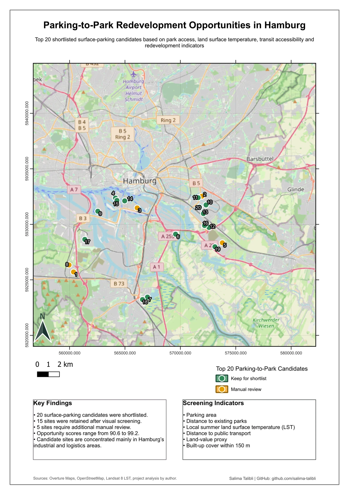

The question
Which surface-parking lots offer promising opportunities for urban greening? Site size alone cannot answer that question. This project compares green-space need, heat, surrounding development, transit access and a land-value proxy alongside area.
I developed the spatial indicators and ranking in Python, used QGIS for visual screening and cartographic output, and presented the shortlist in a Folium dashboard with a searchable candidate table.
The workflow
- Identify plausible surface-parking candidates. Select Overture parking polygons of at least 300 m² in Hamburg. Use building-footprint overlap as a quality-control filter.
- Calculate six spatial indicators. Measure park and transit proximity, site area, heat within a 90 m neighbourhood, built-up intensity within 150 m and a Bodenrichtwerte land-value proxy.
- Rank and diversify. Normalize indicators to 0–100 and combine them with explicit weights. Retain the highest-scoring candidate per Baublock to limit adjacent selections.
- Review the shortlist. Visually screen the diversified Top 20 in QGIS, retaining 15 and flagging five for further review.
How the opportunity score is weighted
| Indicator | Weight |
|---|---|
| Green-space need | 25% |
| Urban heat | 20% |
| Parking-lot size | 20% |
| Built-up intensity | 15% |
| Public transport accessibility | 10% |
| Land-value feasibility proxy | 10% |
From a citywide search to 20 sites
The model evaluates 5,436 candidates. Scores among the diversified Top 20 range from 90.6 to 99.2. The shortlist focuses attention on a manageable set of sites while preserving a visible distinction between ranking and manual review.


The dashboard lets a reviewer inspect each candidate’s score, area, distance to parks and public transport, local surface temperature, land-value proxy and surrounding built-up cover.
A screening tool, not a feasibility verdict
Visual screening does not establish availability, ownership or permission to redevelop. Planning regulations, current use, parking demand and implementation constraints require further investigation.
Land values and building coverage are proxies, not direct measures of acquisition cost or sealed surface. The result depends on source-data quality, indicator definitions and chosen weights.
Data & documentation
The workflow combines Overture Maps parking and building data, Hamburg administrative boundaries and park data, Bodenrichtwerte 2026, HVV GTFS stops and Landsat 8 Collection 2 Level-2 surface temperature.
Map outputs retain their original source credits. Detailed source information, indicator definitions, notebooks and the reviewed shortlist are available in the project repository.